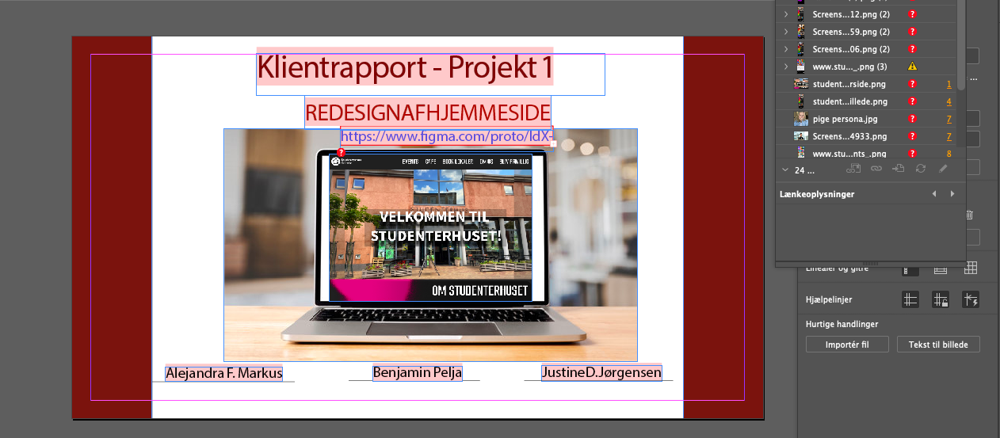
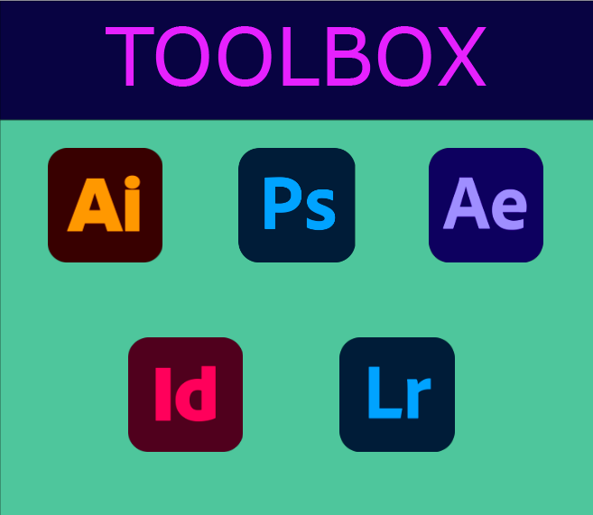

Adobe Illustrator
All drawings on the pages were made in Adobe Illustrator, including the green wolf, the logo and the twerking meme.

Photoshop
This was made during a workshop. The left is the original picture and the right is the edited version in Photoshop.

After Effects
This is a video I made for an earlier workshop.
Adobe InDesign
Example of what I can do in InDesign.

Adobe Lightroom
Since the main picture already had a filter, I tried to make it a bit lighter.

My toolbox
This is the toolbox I used during the project.
